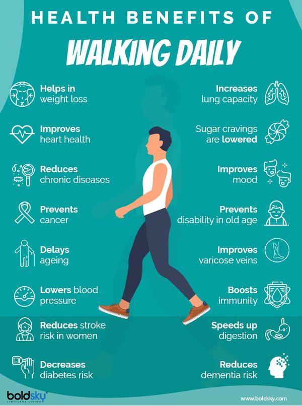
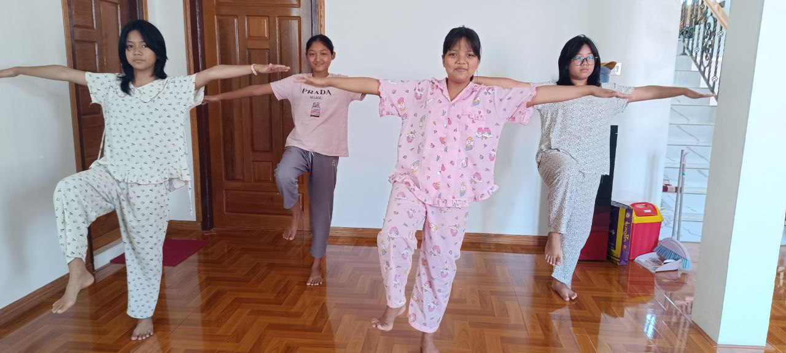
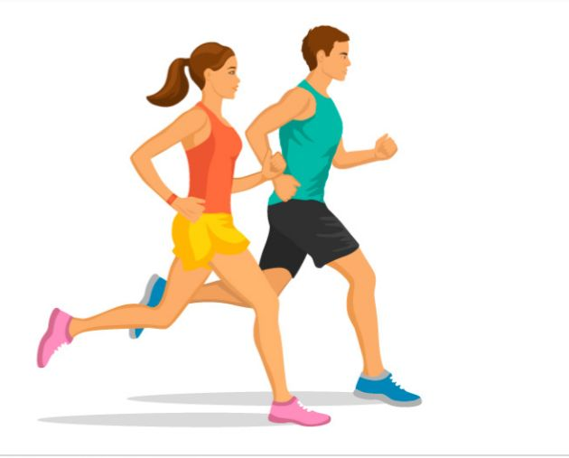

Walking can help reduce the risk of high blood pressure, diabetes, and heart disease.
Doing Yoga makes us Reduces stress and anxiety. Improves concentration and memory. Promotes emotional stability and happiness.

Playing badminton can Strengthens the whole body, especially the arms, legs, abdominal, and back muscles

jumping rode can Reduces fat and improves cardiovascular health.

Do exercise can Helps control weight and prevents obesity Burns calories and increases metabolism Helps maintain muscle mass during weight loss

Runing can Improves coordination and movement ability due to fast hand and foot motions